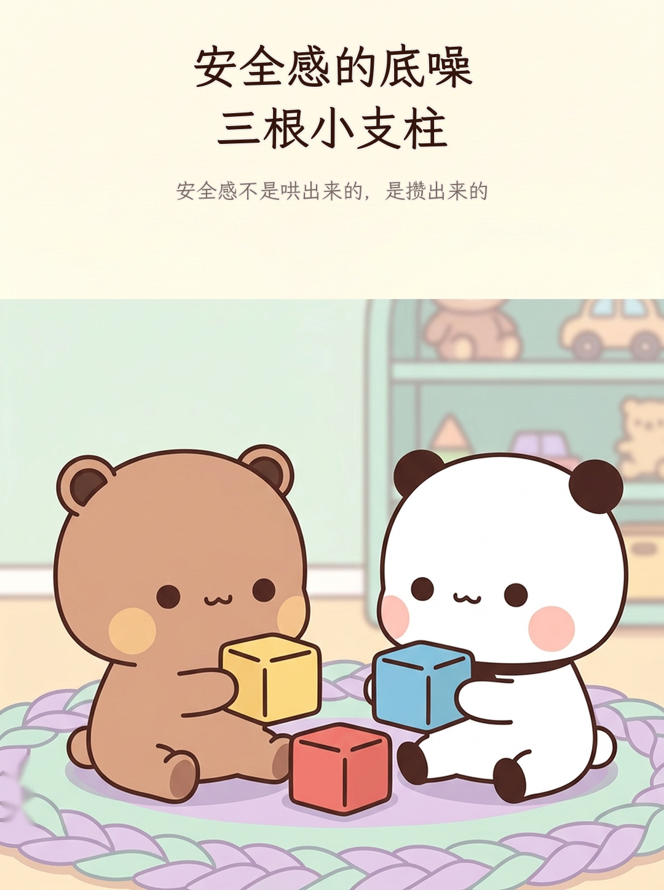
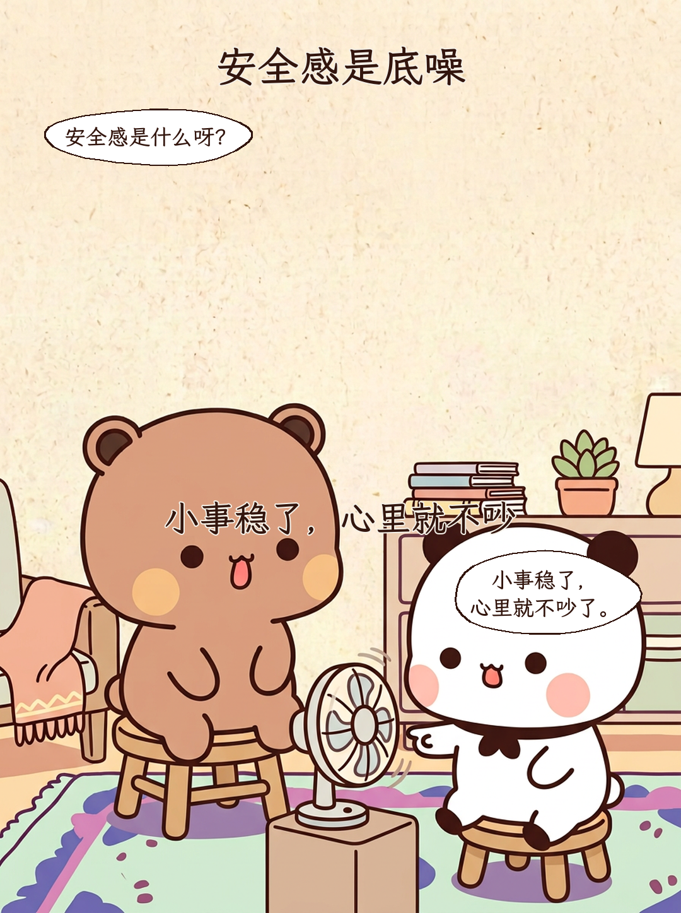
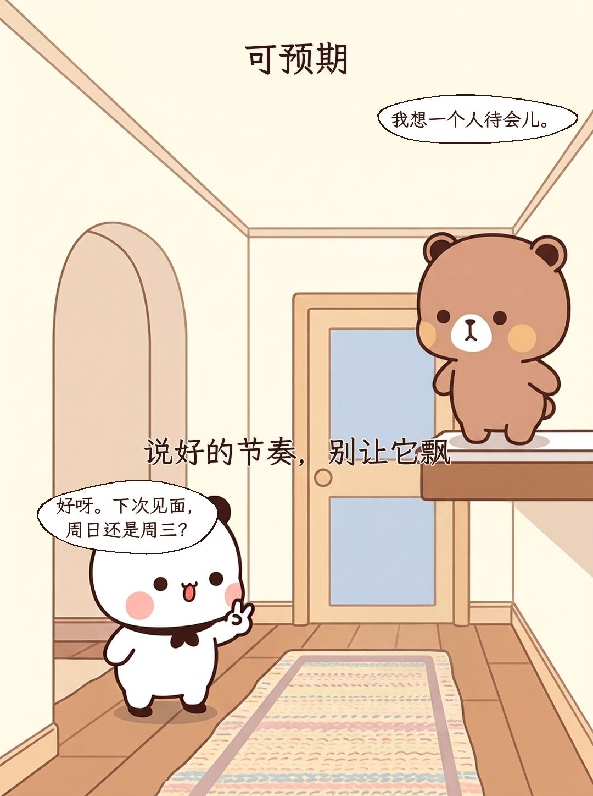
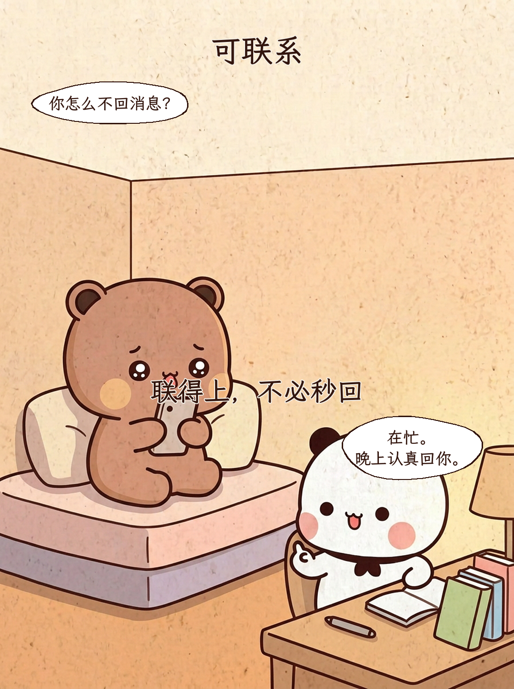
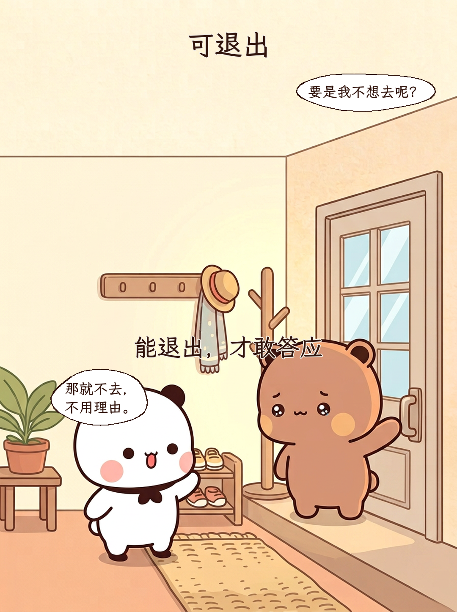
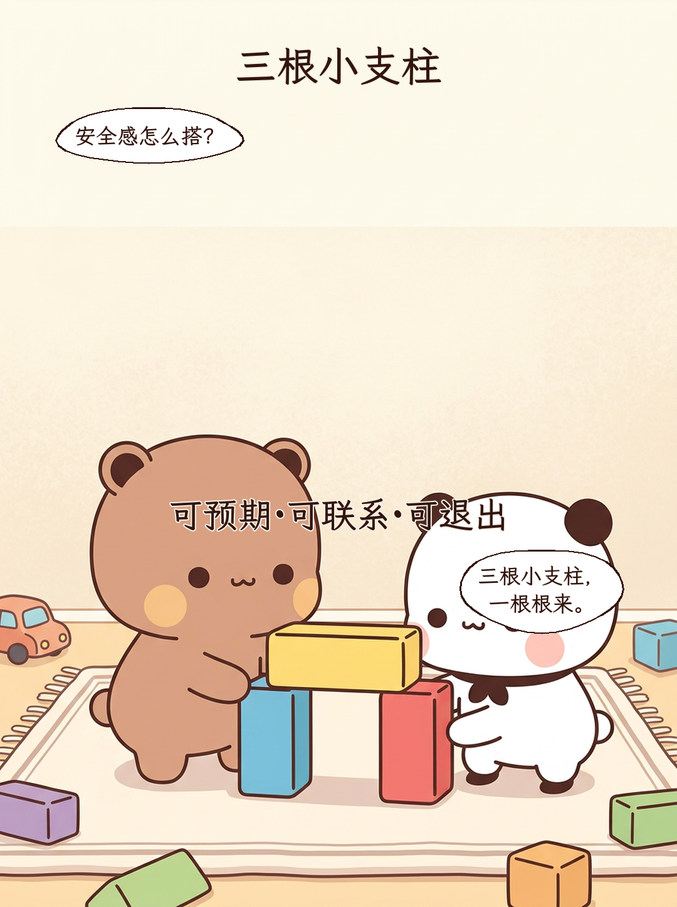
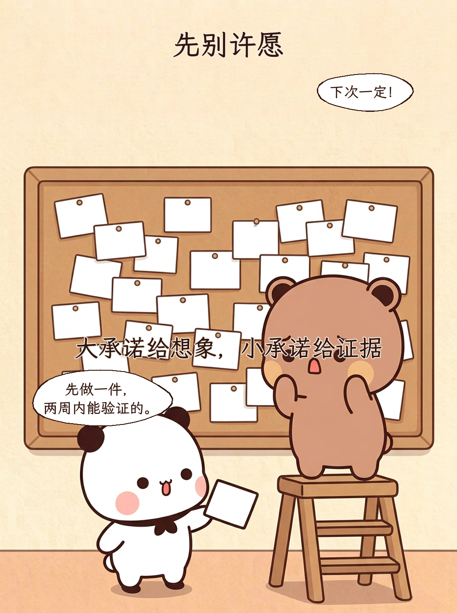
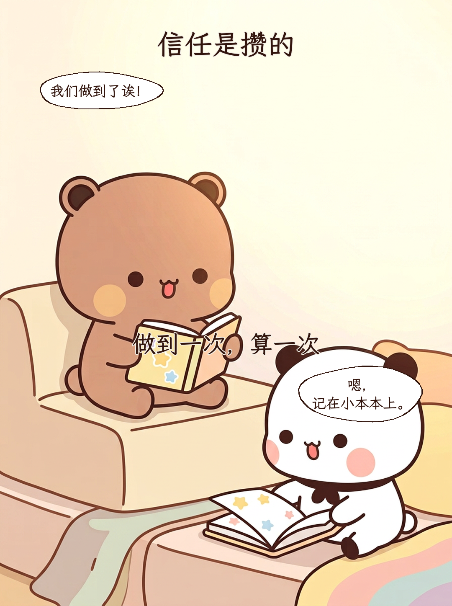
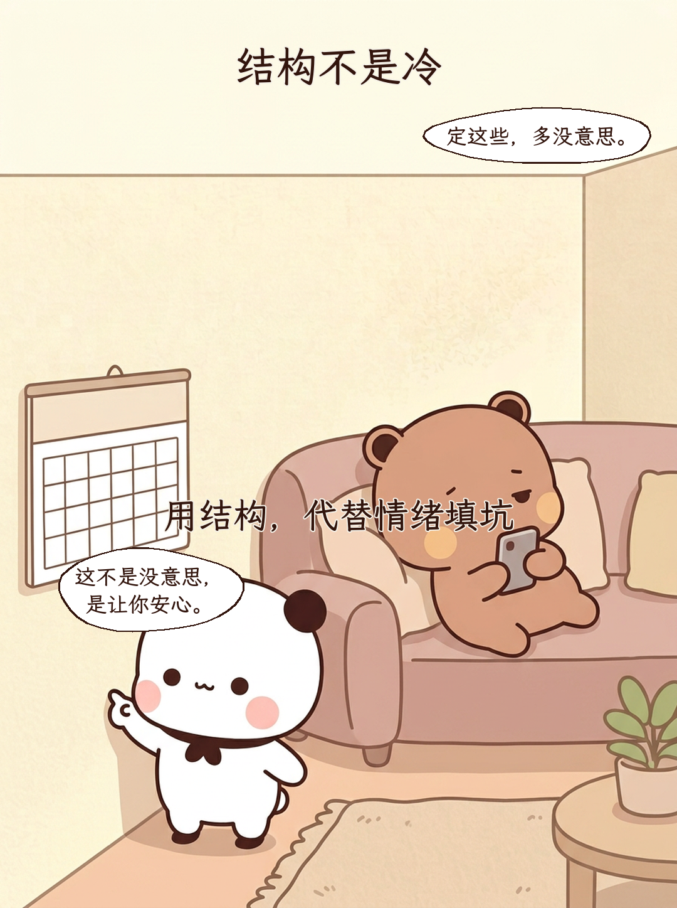
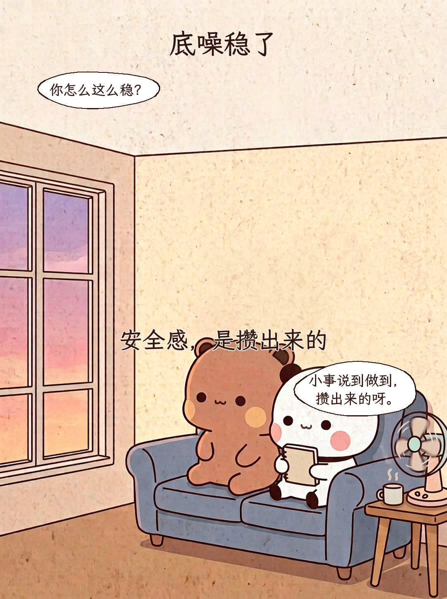

安全感的底噪 三根小支柱
安全感不是哄出来的，是攒出来的

安全感是底噪
小事稳了，心里就不吵
安全感是什么呀？ / 小事稳了， 心里就不吵了。
可预期
说好的节奏，别让它飘
我想一个人待会儿。 / 好呀。下次见面， 周日还是周三？
可联系
联得上，不必秒回
你怎么不回消息？ / 在忙。 晚上认真回你。
可退出
能退出，才敢答应
要是我不想去呢？ / 那就不去， 不用理由。
三根小支柱
可预期·可联系·可退出
安全感怎么搭？ / 三根小支柱， 一根根来。
先别许愿
大承诺给想象，小承诺给证据
下次一定！ / 先做一件， 两周内能验证的。
信任是攒的
做到一次，算一次
我们做到了诶！ / 嗯， 记在小本本上。
结构不是冷
用结构，代替情绪填坑
定这些，多没意思。 / 这不是没意思， 是让你安心。
底噪稳了
安全感，是攒出来的
你怎么这么稳？ / 小事说到做到， 攒出来的呀。